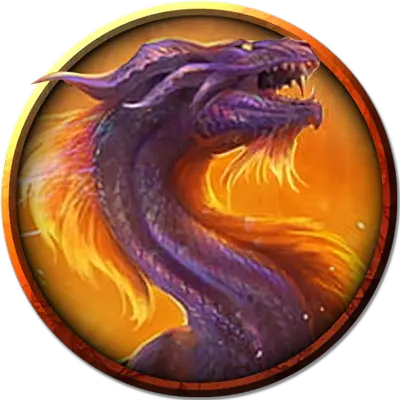

Взрослый солнечный дракон
Adult Solar Dragon
Огромный Дракон, обычно нейтральный

Класс Доспеха 17 (природный доспех)
Хиты 200 (16к12 + 96)
Скорость 30 футов, летая 90 футов (парит)
| мод | спас | ||
|---|---|---|---|
| СИЛ | 24 | +7 | +7 |
| ЛОВ | 15 | +2 | +7 |
| ТЕЛ | 22 | +6 | +11 |
| мод | спас | ||
|---|---|---|---|
| ИНТ | 15 | +2 | +2 |
| МДР | 16 | +3 | +8 |
| ХАР | 14 | +2 | +7 |
Навыки Восприятие +13, Скрытность +7
Иммунитет к урону излучение
Иммунитет к состояниям ослепление
Чувства тёмное зрение 180 футов, пассивное Восприятие 23
Языки Драконий
Опасность 14 (11500 опыта)
Бонус мастерства +5
Особенности
Облёт. Дракон не провоцирует атаки, когда вылетает из досягаемости врага.
Легендарное сопротивление (2/день). Если дракон проваливает спасбросок, он может вместо этого сделать спасбросок успешным.
Неотчетливые мысли. Попытки магическим образом прочитать разум дракона или уловить его мысли автоматически проваливаются.
Осадное чудовище. Дракон наносит двойной урон объектам и сооружениям.
Необычная природа. Дракон не нуждается в воздухе.
Действия
Мультиатака. Дракон совершает одну атаку Укусом и одну атаку Хвостом.
Укус. . Рукопашная атака оружием: +12 к попаданию, досягаемость 15 футов, одна цель. Попадание: 14 (2к6 + 7) колющего урона плюс 7 (2к6) урона излучением.
Хвост. . Рукопашная атака оружием: +12 к попаданию, досягаемость 20 футов, одна цель. Попадание: 10 (1к6 + 7) дробящего урона.
Фотонное дыхание (Перезарядка 5-6). Дракон выдыхает мерцающую частицу энергии излучения, летящую в точку, которую дракон может видеть в пределах 180 футов, а затем расширяющуюся в сферу радиусом 30 футов с центром в этой точке. Все существа в сфере должны совершить спасбросок Телосложения Сл 19, получая 55 (10к10) урона излучением при провале или половину этого урона при успехе.
Легендарные действия
Дракон может совершить 3 легендарных действия, выбирая из представленных ниже вариантов. За один раз можно использовать только одно легендарное действие, и только в конце хода другого существа. Дракон восстанавливает использованные легендарные действия в начале своего хода.
Атака хвостом. Дракон совершает атаку Хвостом.
Вспышка света (стоит 2 действия). Дракон излучает магический свет в виде сферы радиусом 20 футов, центрированной на нём. Каждое существо в этой области должно преуспеть в спасброске Мудрости Сл 19, иначе станет ослеплённым до конца своего следующего хода.
Местные эффекты
Солнечный дракон обычно устраивает логово в энергетическом ядре звезды или гнездится в гигантской полой скале под ослепительным сиянием звезды. Звезда, в которой солнечный дракон устроил свое логово, оказывает следующие эффекты на существ:
• Ослепляющее излучение. Существо, находящееся в пределах 10 миль от звезды или внутри неё, становится ослеплённым её интенсивным светом, если только у существа нет защитного снаряжения для защиты глаз, такого как ночные очки [goggles of night] или подобные очки.
• Звездное сожжение. Любое существо, которое входит в звезду или начинает свой ход внутри неё, получает 132 (24к10) урона излучением.
Описание
Солнечный дракон (также известный как «лучезарный дракон») рождается в сердце звезды. Вне логова он посвящает свое время патрулированию территории и поискам пищи. Змеевидное тело дракона покрыто сверкающей разноцветной чешуёй. Пара конечностей, расположенных на брюхе, оканчиваются длинными плавниками, а его крылья будто сотканы из тумана, излучающего свет. Он хорошо видит даже при ослепительно ярком свете.
Солнечные драконы, как и все драконы, любят сокровища, но в безвоздушной пустоте Дикого космоса больше всего они ценят пищу. Солнечные драконы обычно питаются киндори, поглотителями и другими видами космической фауны. Солнечный дракон издалека может принять магический корабль за возможную добычу и подойдет к нему на расстояние выстрела, прежде чем осознает свою ошибку и ретируется. Мудрый или опытный капитан не воспримет приближение дракона как знак враждебности. Известны случаи, когда солнечные драконы, по которым открывали огонь, разбивали обидевшие их корабли в щепки.
Солнечные драконы — территориальные хищники, и они ведут себя соответствующим образом. Молодой солнечный дракон может претендовать на пояс астероидов, где относительно много пищи. Древний солнечный дракон может считать своей охотничьей территорией целую систему Дикого космоса. Они стараются обходить стороной гуманоидов, которых считают жестокими и надоедливыми. Злоумышленники, обнаруженные в логове солнечного дракона, могут получить отпор, приводящий к враждебному отношению, особенно если в логове есть яйца.
Яйцо солнечного дракона имеет блестящую черную и непрозрачную обсидиановую скорлупу, Когда близится время вылупления, скорлупа яйца становится полупрозрачной. Это позволяет свету от крыльев ещё не родившегося вирмлинга сиять сквозь неё.